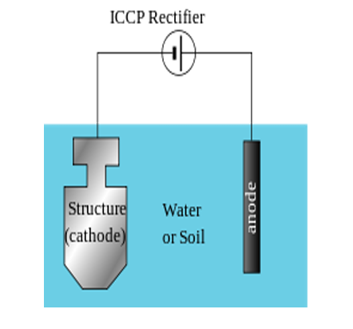

Engineers combat the natural phenomenon of corrosion through several methods:
1. Material Selection & Protective Coatings
Using noble metals (Au, Pt) or pure metals is often impossible due to cost or strength issues. Instead, engineers rely on corrosion-resistant alloys (like Stainless Steel), non-metals (ceramics/polymers), or physical barrier coatings. A common method is Galvanizing, which is the process of dipping a cleaned steel sheet into molten zinc to form a protective layer.
2. Cathodic Protection
This involves preventing corrosion by forcing the metallic structure to act strictly as the cathode.
- Sacrificial Anodic Protection: The structure is electrically connected to a more active metal (like Zinc or Magnesium). The active metal sacrifices itself (corrodes) to protect the structure. Used in buried pipelines, ship hulls, and domestic water boilers.
- Impressed Current Cathodic Protection (ICCP): A DC power source (like a battery or rectifier) supplies electrons continuously into the structure alongside an inert anode (like graphite or platinum). This applied current nullifies the corrosion current.

3. Modifying the Environment (Inhibitors)
Because the environment plays a massive role in corrosion, it can be neutralized by adding chemical inhibitors.
- Hydrogen Evolution Poisons: Added when the cathodic reaction is HER. Examples include Arsenic (As), Antimony (Sb), Amines, and Thiourea.
- Oxygen Scavengers: Added when the reaction is ORR. They eliminate oxygen from the medium entirely to halt the reaction.
Watch the video below to explore practical engineering solutions for preventing corrosion:
Practice Exercises
Test your knowledge on Corrosion Prevention techniques.
1. What is the fundamental principle behind Cathodic Protection?
A) Wrapping the metal in thick plastic
B) Forcing the metallic structure to become the oxidizing anode
C) Supplying electrons to the structure to force it to act purely as the cathode
2. Which two highly active metals are commonly used as "sacrificial anodes" to protect steel structures like ship hulls?
A) Gold and Platinum
B) Zinc and Magnesium
C) Copper and Tin
3. In Impressed Current Cathodic Protection (ICCP), where do the protecting electrons come from?
A) An external DC power source like a battery or rectifier
B) A highly reactive sacrificial metal
C) A chemical reaction with the soil
4. What process involves dipping a steel article into molten zinc to create a physical protective barrier?
A) Passivation
B) Anodizing
C) Galvanizing
5. What is the role of an "Oxygen Scavenger" inhibitor?
A) To eliminate oxygen from the medium to halt the Oxygen Reduction Reaction (ORR)
B) To pump extra oxygen into a crevice
C) To act as a physical paint barrier